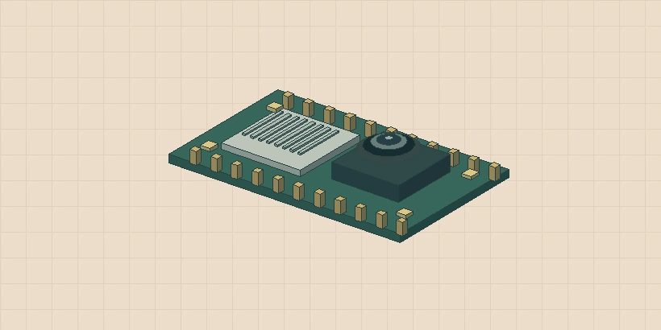

Ensino Médio Técnico · Senac
Ronald WolneyWillwohl França
Estudo Internet das Coisas. Nos projetos, minha parte costuma ser montar os componentes, pensar na lógica e programar o que acontece quando um sensor responde.

Projetos em destaque
Ver formação técnica
ESP32 · Automação
Mini Fábrica Inteligente
Uma esteira que percebe a chegada de uma peça e para no ponto de leitura.

ESP32-CAM · Visão computacional
Identificador de imagens
Uma câmera envia a imagem e o computador fala o nome do objeto reconhecido.

Arduino · Sensores
Lixeira automática
A distância medida por ultrassom decide quando o servo deve abrir a tampa.
Do primeiro ano
à bancada de IoT.
Comecei o Ensino Médio no Senac em 2024. Agora, no 3º ano, reúno os registros que ajudam a explicar como saí de uma ideia para um circuito que dá para testar.